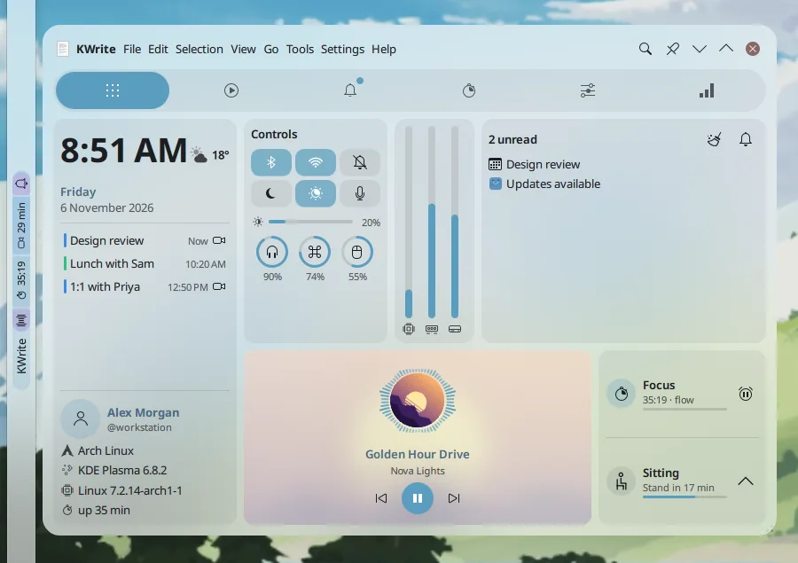
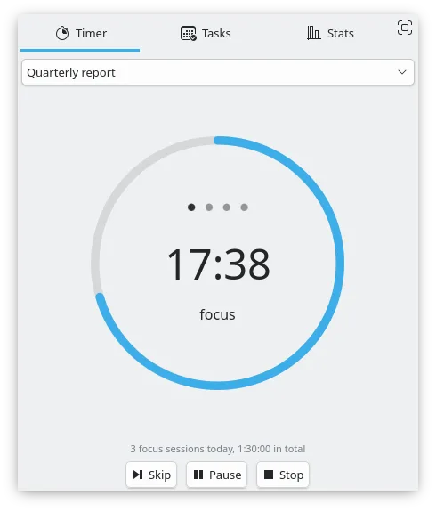
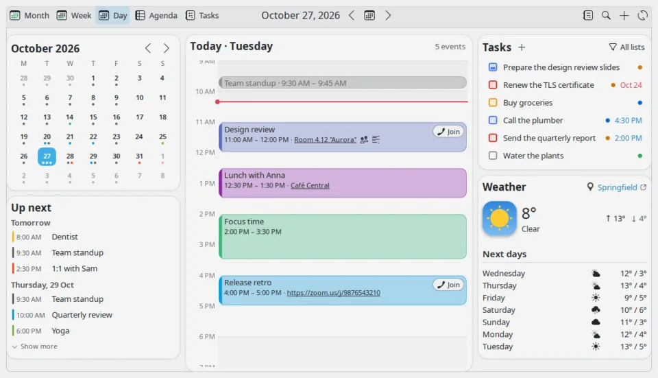
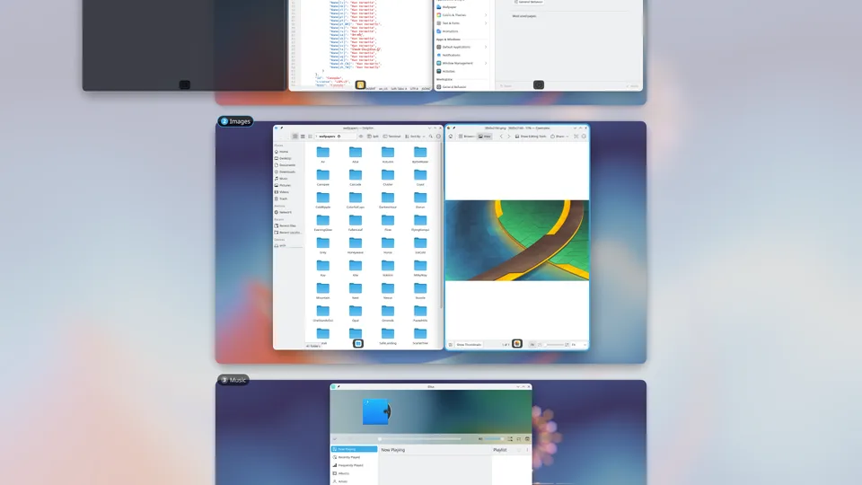
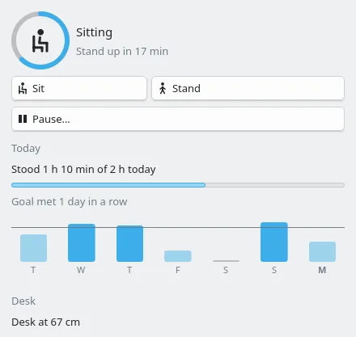
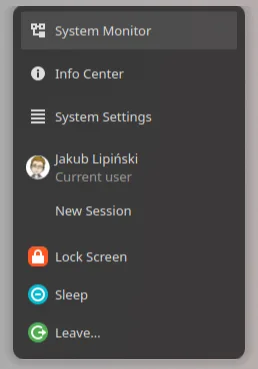
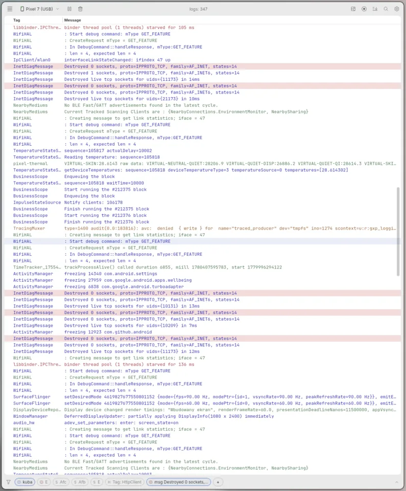
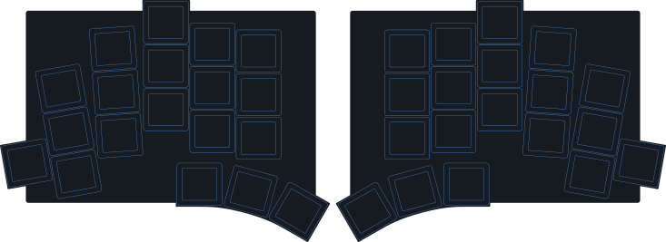

KDE Plasma
Widgets and effects for Plasma 6, most of them on the KDE Store. Two started from other people's widgets, and say so.


Event Calendar NG
RedesignYour day, one click from the clock: calendar, agenda, tasks, meetings with one-click Join, and the weather.
A complete redesign of Event Calendar by Chris Holland (Zren), which it started from via ALikesToCode's Plasma 6 port.
QMLJavaScriptGoogle · CalDAV



Taskline
ForkA task manager for the panel: live window previews, media controls on the window that actually plays, unread badges, and attention signals that don't nag.
My fork of Fancy Tasks NG by Vitaliy Elin, which builds on FancyTasksPlus and the original FancyTasks.
QMLPythonPlasma 6.5+
Tools and hardware
For the day job, and for typing.


TOTEM keymap
My ZMK firmware configuration for the TOTEM, a 38-key wireless split keyboard; the firmware builds itself on GitHub Actions.
ZMKSplit keyboard
Earlier
Learning projects, archived.